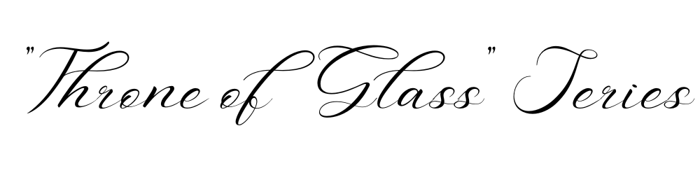
|
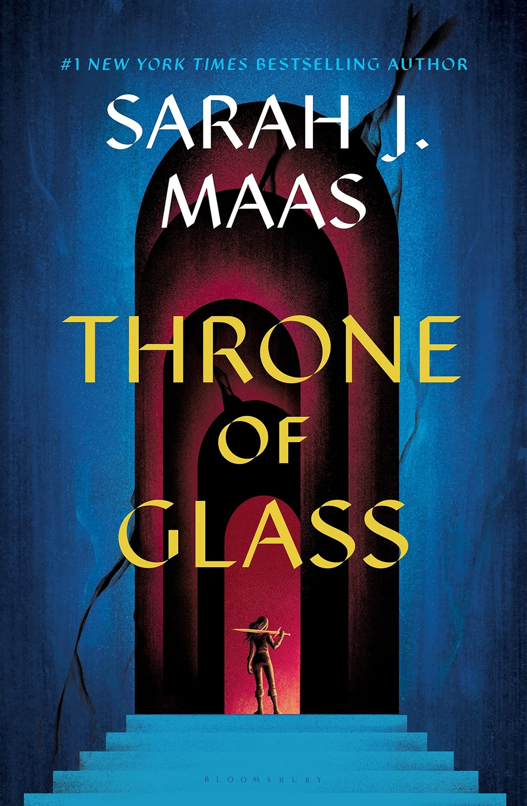 THRONE OF GLASS |
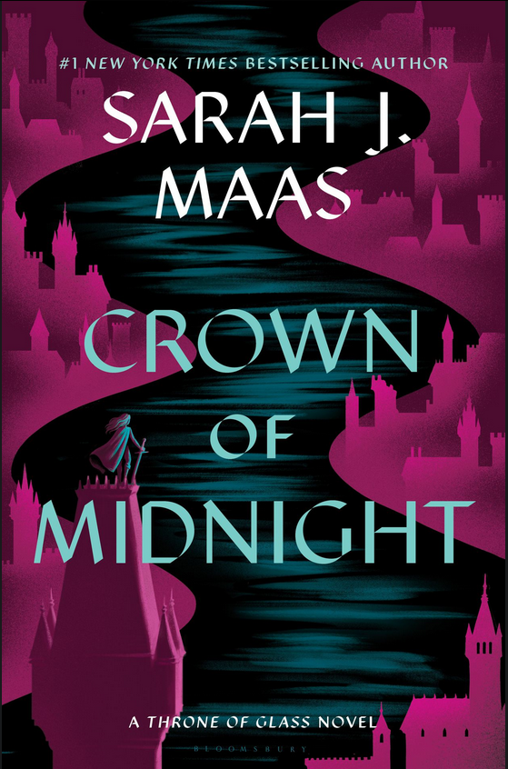 CROWN OF MIDNIGHT |
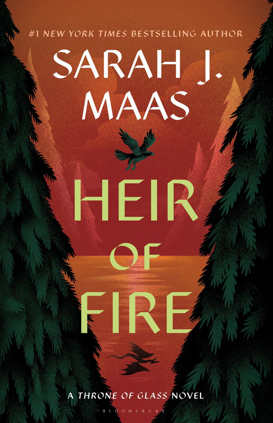 HEIR OF FIRE |
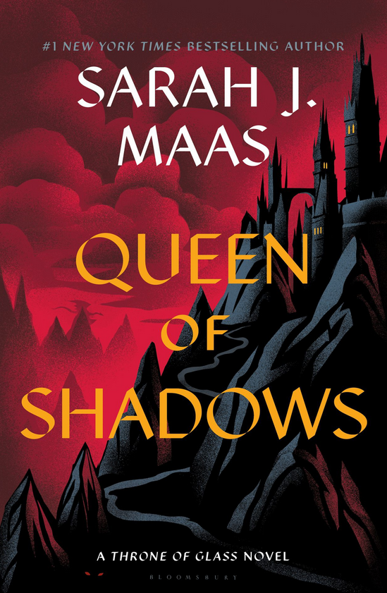 QUEEN OF SHADOWS |
|
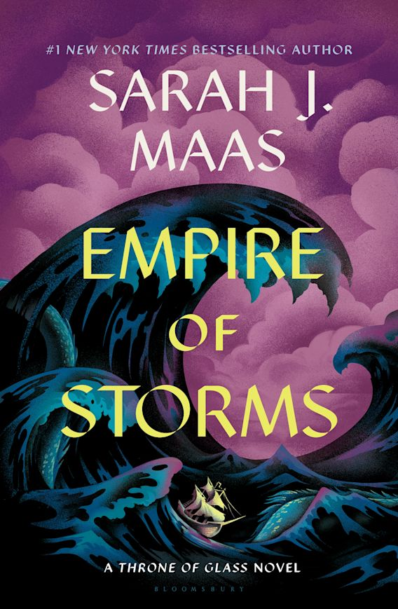 EMPIRE OF STORMS |
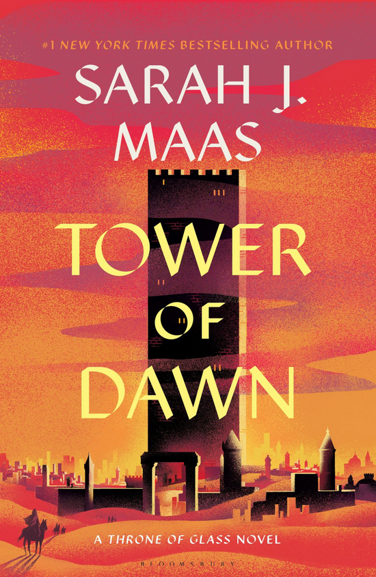 TOWER OF DAWN |
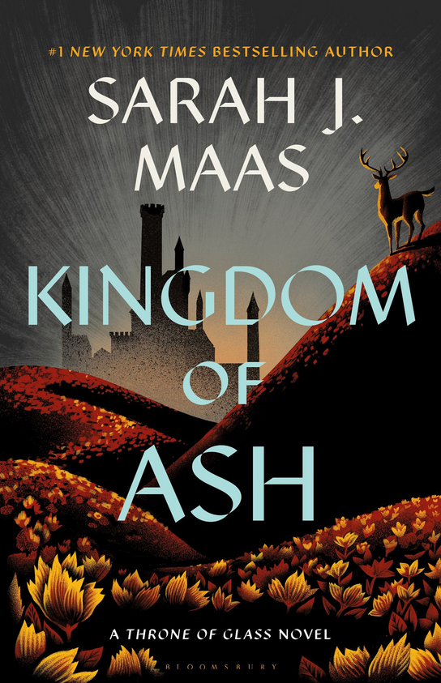 KINGDOM OF ASH |
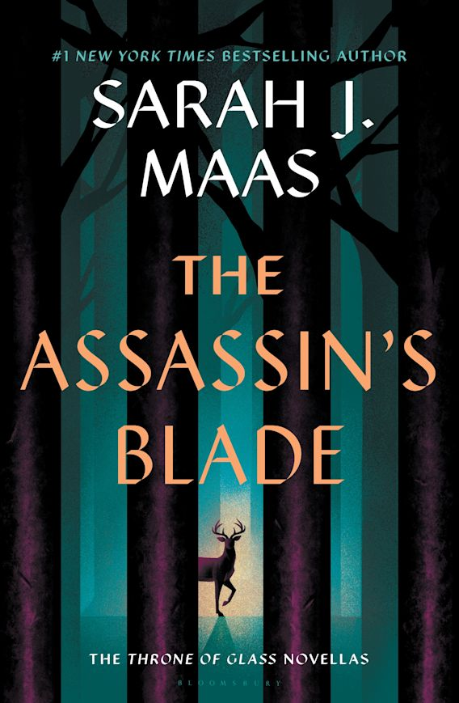 THE ASSASSIN'S BLADE |
Celaena Sardothien, an 18-year-old assassin, has spent a year in the brutal slave camp of Endovier, sentenced to die. But when Prince Dorian Havilliard of Adarlan offers her a deal—win a deadly competition to become the King's Champion, serve him for four years, and earn her freedom—she accepts, despite despising the king who destroyed her home.
Taken to the glass castle of Rifthold, Celaena must compete against 23 other dangerous criminals, warriors, and assassins. She trains under Captain Chaol Westfall, the stern and disciplined captain of the royal guard, who doesn't trust her but recognizes her skill. While in the castle, she also develops an unlikely friendship with Nehemia Ytger, a princess from Eyllwe who harbors secrets about the king’s tyranny.
As the competition progresses, something sinister starts killing off the competitors in gruesome ways. Celaena investigates and uncovers an ancient, magical force connected to the Wyrdmarks, mysterious symbols linked to forgotten power. She discovers a hidden tomb where the ghost of Queen Elena, the first queen of Adarlan, warns her of a great darkness rising and gives her a magical amulet for protection.
Meanwhile, she is caught in a love triangle between Dorian, the charming prince who is drawn to her, and Chaol, whose loyalty to the kingdom conflicts with his growing feelings for her.
As the final battle of the competition nears, Cain, a brutal and magically-enhanced warrior, becomes her greatest threat. Using dark forces, Cain nearly kills her, but with the help of Queen Elena’s magic, she defeats him. However, the king's advisor, Duke Perrington, and the king himself seem to have their own dark schemes involving magic and war.
After winning the tournament, Celaena is officially named the King’s Champion, forced into the service of the very man she despises. But she has her own plans—ones that will shape the fate of the kingdom.
|
Now serving as the King’s Champion, Celaena Sardothien is bound to assassinate enemies of the crown. Outwardly, she appears loyal, but in secret, she is faking the deaths of her targets and helping them escape. When the king orders her to eliminate Archer Finn, a figure from her past who may be involved in a rebellion, she hesitates, determined to uncover the truth.
Meanwhile, her relationships grow more complicated. She distances herself from Dorian Havilliard, who is struggling with strange new magic awakening inside him, and her bond with Chaol Westfall deepens into romance. But when Nehemia, her closest friend, is murdered under mysterious circumstances, Celaena is consumed by grief and rage, suspecting Chaol of knowing more than he admits. Her fury pushes her into a violent confrontation with him, shattering their trust.
Driven by vengeance, Celaena brutally kills Archer Finn after discovering his betrayal—he was working against Nehemia, not for her cause. Meanwhile, the king’s interest in Wyrdmarks, an ancient magical language, reveals his involvement with dark forces. Celaena discovers a hidden chamber beneath the castle where Wyrdkeys, powerful artifacts that control portals to other worlds, are being sought by the king to increase his power.
As Celaena uncovers more secrets about the castle, Dorian’s magic grows stronger, proving that magic—thought to be gone—still exists in certain bloodlines. In a shocking twist, Chaol learns Celaena’s true identity: she is Aelin Galathynius, the lost heir to the throne of Terrasen, and the rightful queen.
The book ends with Chaol sending Celaena away to Wendlyn, hoping to protect her, but unknowingly setting her on a path to embrace her destiny as queen.
|
After the shocking revelations in Crown of Midnight, Celaena Sardothien—now revealed to be Aelin Galathynius, the lost queen of Terrasen—has been sent to Wendlyn by Chaol. Broken by Nehemia’s death and struggling with her grief, she has no real purpose until she is approached by Rowan Whitethorn, a fierce and cold Fae warrior who takes her to the powerful Queen Maeve of the Fae. Maeve, the only one who might have answers about Wyrdkeys, refuses to help Aelin unless she proves herself worthy by mastering her magic.
Under Rowan’s brutal training, Aelin struggles to control her fire magic. She is weak, haunted by her past, and constantly at odds with Rowan, but as she pushes through her pain, she begins to grow stronger. Eventually, she unlocks the full force of her Fae powers, becoming something far greater than she ever imagined. She and Rowan form a deep bond of understanding, though it remains mostly platonic in this book.
Meanwhile, back in Rifthold, Dorian Havilliard struggles with his growing ice magic, a dangerous secret in a kingdom where magic is outlawed. He finds solace in Sorscha, a healer who secretly helps him control his abilities. However, Chaol Westfall is caught between his loyalty to the kingdom and his growing understanding of Celaena’s true identity. He allies with Aedion Ashryver, Celaena’s long-lost cousin and a general in the king’s army, who has been secretly working to overthrow the king and restore Terrasen’s queen.
A new enemy also rises—Manon Blackbeak, heir to the Blackbeak witch clan. The king has recruited the witches to ride wyverns (dragon-like beasts) as part of his growing army. Manon, a ruthless and ambitious warrior, bonds with Abraxos, an unlikely but powerful wyvern, setting her on a path that will intertwine with Aelin’s fate.
As Aelin masters her magic, she learns the horrific truth about the king of Adarlan’s control over magic: he has been using Wyrdkeys to seal magic away and raise an army of Valg demons, possessing humans and turning them into monsters. With Rowan’s help, Aelin unleashes her full power in a massive, fiery battle against the Valg, proving that she is ready to reclaim her throne.
|
Aelin Galathynius has returned to Rifthold, no longer Celaena Sardothien, but the rightful Queen of Terrasen. With Rowan Whitethorn now at her side, she is determined to take down the evil forces ruling the kingdom, rescue her cousin Aedion Ashryver, and defeat the King of Adarlan once and for all. Aelin quickly learns that Dorian Havilliard is still alive—but enslaved by a Wyrdstone collar, possessed by a Valg prince. While she wants to save him, she knows killing him may be the only way to stop the king’s magic.
Her first goal is to rescue Aedion, who is set to be executed. With Rowan’s help, she stages a daring rescue, freeing Aedion from the castle’s dungeons. Meanwhile, she reconnects with Lysandra, a courtesan from her past who reveals she is a shapeshifter. Together, they plot revenge against Arobynn Hamel, the King of the Assassins, who betrayed her years ago. Aelin plays a dangerous game, pretending to work for Arobynn, all while planning his downfall.
Meanwhile, Chaol Westfall has teamed up with the rebels, but his relationship with Aelin is strained. He still struggles to accept her magic and her role as queen. However, his goal is to rescue Dorian, even if it means risking everything. He is aided by Nesryn Faliq, a skilled archer and rebel fighter, with whom he begins developing a deeper connection.
Over in Morath, Manon Blackbeak, heir to the Blackbeak Witch Clan, begins questioning Duke Perrington’s orders and the horrific experiments on witches and humans. She forms a tense connection with Elide Lochan, a human girl with royal blood, who is secretly searching for Aelin.
Manon’s loyalty is further tested when Asterin, her second-in-command, reveals a heartbreaking secret about how witches are treated by Perrington’s forces. This leads Manon to question her allegiance to her grandmother and the king. With her allies gathered, Aelin makes her boldest move yet—storming the castle. In a dramatic showdown, she confronts the King of Adarlan, who has ruled with terror for years. Meanwhile, Dorian fights against the Valg inside him, and with Aelin’s help, he finally breaks free of the Wyrdstone collar, regaining his power.
In a shocking twist, the King of Adarlan reveals that he had been possessed all along, and that he had fought to keep the darkness at bay. Just before dying, he tells Dorian that Erawan, the true enemy, is still out there. With the king defeated and Adarlan freed, Dorian is crowned King of Adarlan. However, the battle is far from over—Erawan, the true dark force, is growing stronger in Morath.
|
Aelin, Rowan Whitethorn, Aedion Ashryver, Lysandra, and Evangeline travel across the continent, seeking allies. Along the way, Aelin’s fire magic grows stronger, and her bond with Rowan deepens into a full-fledged romance. Lysandra, using her shapeshifting abilities, begins training to shift into a sea dragon, preparing for a naval war. Meanwhile, Aedion struggles with his feelings for Lysandra but remains fiercely loyal to Aelin.
Now king, Dorian Havilliard is struggling with the weight of his title. His magic is powerful, but unpredictable, and he is haunted by the trauma of his possession. Aelin wants him to rule Adarlan with strength, but he feels lost and directionless. In Morath, Manon Blackbeak continues leading her Thirteen, but she begins to openly defy her grandmother, Matron Blackbeak. She discovers that Elide Lochan, a Terrasen noblewoman, has escaped and is searching for Aelin. Instead of capturing her, Manon helps her flee. When Manon learns she is actually the long-lost Crochan Queen, the rightful ruler of the witches, her grandmother tries to execute her. Asterin, her second-in-command, sacrifices herself to save Manon, but Manon ultimately kills her grandmother and escapes, setting out to find Aelin.
Elide, still searching for Aelin, finds herself traveling with Lorcan Salvaterre, a powerful Fae warrior once loyal to Maeve. Initially cold and ruthless, Lorcan slowly begins to care for Elide, and she starts seeing past his hardened exterior. Their relationship grows from distrust to deep affection, even as Lorcan remains conflicted about his loyalties. Aelin and her court seek help from Ansel of Briarcliff, the Silent Assassins of the Red Desert, and the Mycenians, a group of legendary warriors. However, before they can rally their forces, Maeve, Queen of the Fae, launches a surprise attack.
Maeve kidnaps Aelin, torturing her and revealing a heartbreaking truth: Aelin is not just the Queen of Terrasen, but also the final key to locking Erawan away forever. She was never meant to rule—only to be sacrificed. To protect her court, Aelin allows herself to be taken, but not before secretly passing her crown and power to Lysandra. In a final act of betrayal, Lorcan—unknowingly—summoned Maeve to Aelin’s location, leading to her capture. Realizing his mistake, he is devastated, but Aedion and the others refuse to forgive him.
With Aelin taken by Maeve, Rowan, Dorian, Aedion, and the others must prepare for war without their queen. Rowan marries Aelin in secret before she is taken, tying their fates together.
|
Chaol Westfall and Nesryn Faliq travel to Antica to seek healing for Chaol’s paralysis and to convince the khagan to send an army to fight Erawan.
At the Torre Cesme, Chaol is assigned Yrene Towers, a gifted healer who resents Adarlan but agrees to help him. As they grow closer, Yrene discovers her healing magic is incredibly powerful. Meanwhile, Nesryn and Prince Sartaq, heir to the ruk riders, uncover horrifying truths—Maeve is actually a Valg Queen, not a true Fae, making her an even bigger threat.
Political tensions rise in Antica, and Chaol and Yrene learn that Valg forces have already infiltrated the Southern Continent. One of the khagan’s daughters, Duva, is possessed and nearly kills Yrene, but Chaol sacrifices himself to save her. Yrene, in turn, heals Chaol permanently by forging a magical bond between them, and they marry.
Realizing the severity of the threat, the khagan agrees to send his armies to the North. Nesryn and Sartaq prepare to fight, and Chaol and Yrene return home with reinforcements, ready for the final battle.
|
Aelin Galathynius has been captured by Maeve, tortured, and locked in an iron coffin. Meanwhile, her allies—Rowan, Aedion, Lysandra, Dorian, Chaol, Yrene, and others—prepare for the final war against Erawan. Rowan, Gavriel, Lorcan, and Elide rescue Aelin from Maeve’s clutches, but she is deeply traumatized. Despite this, she pushes forward, determined to reclaim Terrasen and defeat Erawan.
Aedion and Lysandra lead the fight in Terrasen, holding back Erawan’s armies while waiting for reinforcements. Dorian, now a master of his magic, infiltrates Morath to find the final Wyrdkey. He teams up with Manon Blackbeak, who unites the Crochan witches against Erawan’s forces. Chaol and Yrene arrive with the Khagan’s armies, and Yrene discovers her healing powers can kill Valg demons. Meanwhile, Rowan and Aelin confront Maeve and, with Dorian’s help, defeat her.
Aelin reaches the Wyrdgate and, instead of sacrificing herself, tricks fate, using the keys to banish Erawan while surviving. The war ends with Erawan and Maeve destroyed. Aelin becomes Queen of Terrasen and begins rebuilding. Rowan remains by her side as her King-Consort. Dorian becomes a true King of Adarlan, determined to undo his father’s damage. Chaol and Yrene start a new life, expecting a child. Manon rules the unified witches, leading them into a new era. Lysandra and Aedion commit to protecting Terrasen. Elide and Lorcan choose love and freedom together.
The story closes with Aelin finally free, standing in her homeland, ready to rebuild a future of peace.
|
The Assassin and the Pirate Lord:
Celaena and Sam Cortland (her fellow assassin) are sent by Arobynn Hamel, King of the Assassins, to deal with Captain Rolfe, a pirate lord. When they discover Arobynn intends to buy slaves, they betray him and free the slaves, making an enemy of Rolfe.
The Assassin and the Healer:
After defying Arobynn, Celaena is sent to a remote location as punishment. There, she meets Yrene Towers, a struggling healer. Celaena teaches Yrene how to defend herself and gives her money to travel to the Southern Continent, where Yrene later becomes one of the most powerful healers (Tower of Dawn).
The Assassin and the Desert:
Arobynn sends Celaena to train with the Silent Assassins of the Red Desert. She bonds with Ansel, a fellow assassin, but later learns that Ansel is a traitor, plotting to kill the master of the Silent Assassins. Celaena stops her but lets her escape.
The Assassin and the Underworld:
Back in Rifthold, Arobynn pretends to forgive Celaena, offering her a mission to free prisoners. She completes it, believing she has done something good, but later learns Arobynn tricked her into killing someone for his own gain. She and Sam confess their love for each other, deciding to leave the Assassin’s Guild for good.
The Assassin and the Empire:
Celaena and Sam plan their escape, but need money to start a new life. Sam takes a dangerous job killing a powerful crime lord but is captured and brutally murdered. Heartbroken, Celaena seeks revenge but is betrayed by Arobynn and handed over to the King of Adarlan, who sends her to Endovier as a slave—where Throne of Glass begins.
|
|
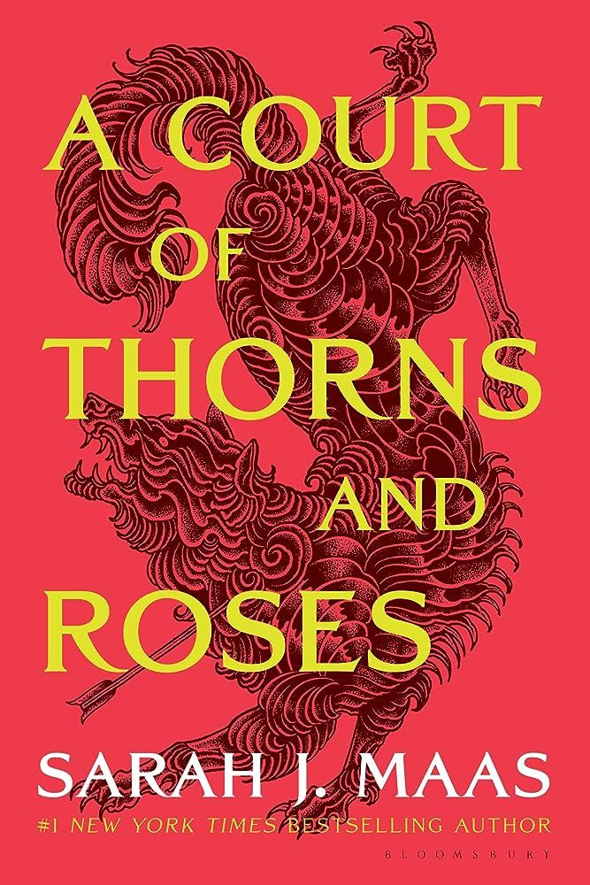 A COURT OF THORNS AND ROSES |
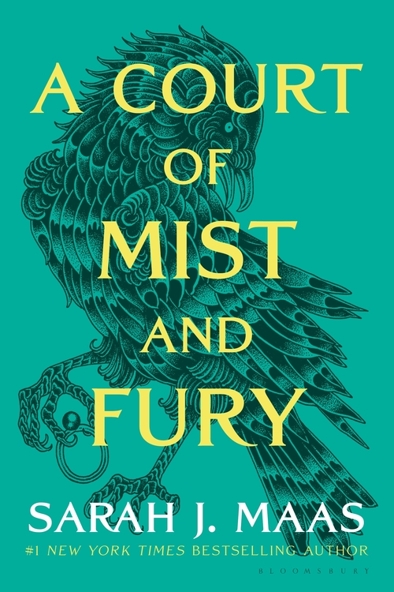 A COURT OF MIST AND FURY |
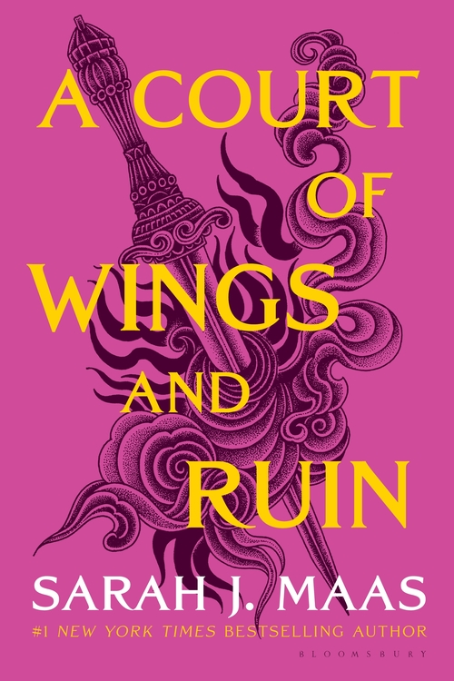 A COURT OF WINGS AND RUIN |
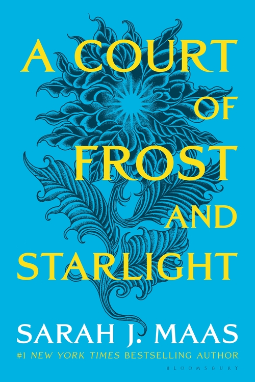 A COURT OF FROST AND STARLIGHT |
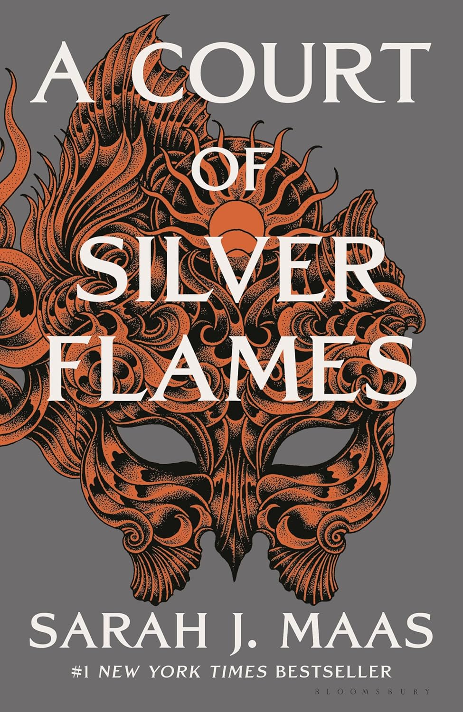 A COURT OF SILVER FLAMES |
Feyre Archeron, a mortal huntress, lives in a world where humans and faeries are separated by a great wall. While hunting to feed her family, Feyre kills a wolf, which turns out to be a faerie in disguise. As punishment, a High Fae named Tamlin comes to her cottage and demands that she accompany him across the wall to the Fae realm, where she is forced to live out her life.
Tamlin is the High Lord of the Spring Court, one of the seven courts of the Fae realm, and he is hiding a dark secret about his curse. Feyre’s life becomes increasingly complicated as she learns about the Fae world, the politics between the courts, and a terrible curse that affects the entire realm. Feyre and Tamlin develop a complex, romantic relationship, and she starts to uncover more about the curse that afflicts Tamlin’s land.
One day, Amarantha, a cruel and sadistic faerie, kidnaps Feyre and forces her to face a series of three trials in order to break the curse that has plagued the Fae world for years. The trials are grueling and dangerous, but Feyre’s strength and courage help her succeed, despite almost losing her life multiple times. During this time, Feyre is forced into a bargain with Rhysand, the powerful High Lord of the Night Court, who claims her as part of an ancient bargain made between them.
In the end, Feyre breaks the curse by defeating Amarantha, though not without great sacrifice. The book concludes with Feyre’s return to the Spring Court, but her connection to Tamlin becomes strained due to the emotional and physical toll of her experiences, setting the stage for the events to come.
|
After breaking the curse, Feyre returns to the Spring Court, but she finds herself deeply traumatized by the horrors she endured Under the Mountain. Tamlin tries to protect her, but he becomes increasingly controlling and overbearing, attempting to shield her from the war aftermath and her emotional scars. Feyre feels suffocated and trapped, as she struggles with PTSD from her time in Amarantha’s court.
Rhysand arrives at the Spring Court to claim Feyre as part of their bargain. Feyre reluctantly agrees to go with him to the Night Court, where she discovers the truth about Rhysand’s court and the weight of the bargain she made. The Night Court is a place of freedom and healing, and Feyre begins to unravel the damage caused by her experiences Under the Mountain.
Feyre’s time at the Night Court allows her to heal, both physically and emotionally. Rhysand introduces her to his Inner Circle, a group of powerful Fae allies, including Cassian, the General of Rhysand’s armies; Azriel, the spymaster; Mor, a fierce warrior; and Amren, a mysterious and powerful being who serves Rhysand.
As Feyre grows stronger, she learns more about her own powers, including the Fae magic she inherited after breaking the curse. Feyre and Rhysand’s bond grows, and she realizes that her feelings for him have shifted from respect and friendship to something deeper. Rhysand reveals that the King of Hybern is preparing to attack the Fae world, and Feyre, now fully committed to the Night Court, agrees to fight alongside them.
|
The threat of the King of Hybern grows as he plans to destroy the Wall that separates the Fae and human worlds. Feyre returns to the Spring Court under the guise of loyalty to Tamlin, but she secretly spies for Rhysand and the Night Court. Feyre’s mission is to gather information about the King’s plans while keeping the trust of Tamlin, who is desperate to protect her and is unaware of the larger threat.
As Feyre navigates the political landscape and the growing tension between the courts, she must also come to terms with the new role she’s taken on as High Lady of the Night Court. The relationship between Feyre and Rhysand strengthens, and they work together to unite the courts to face the impending war. Feyre’s bond with the Inner Circle grows, and she begins to understand the true cost of war and the sacrifices that must be made to protect the world.
In the final battle, Feyre and her allies face off against the King of Hybern and his forces. The battle is long and bloody, with many sacrifices made. Feyre is pushed to her limits as she uses her powers to help defeat the King. Tamlin and Lucien also play significant roles in the fight, and despite their strained relationships with Feyre, they join forces to defeat the King.
By the end of the war, Feyre is permanently changed, and she must navigate the aftermath of the war, including the losses and rebuilding that come with it. The book ends with Feyre fully accepting her place as High Lady of the Night Court and her deep connection to Rhysand.
|
This novella takes place after the events of ACOWAR, where the war has ended, and the Fae world is in the process of rebuilding. Feyre, Rhysand, and their Inner Circle work together to restore peace and heal the broken lands. Feyre’s role as High Lady is solidified, and she continues to adjust to her new responsibilities, alongside Rhysand.
This novella focuses primarily on the personal journeys of the characters as they reflect on the war and its aftermath. Feyre and Rhysand continue to strengthen their bond, but it also explores the emotional and psychological scars left by the war. Nesta, Feyre’s sister, is still struggling with guilt and isolation, refusing to acknowledge the toll the war has taken on her.
|
Nesta continues to struggle with the trauma and guilt she carries after the war. Consumed by anger, she isolates herself from her family and friends. In an effort to help her heal, Cassian offers to train her, hoping to help her regain her strength and sense of self. As they spend more time together, Nesta begins to soften and open up, although her anger and grief still cloud her mind.
During her training with Cassian, Nesta begins to learn that she is not alone in her pain and that she can find redemption and strength through the support of others. Over time, Nesta and Cassian develop a deep, passionate relationship, though it faces numerous challenges, including Nesta’s emotional baggage and the dynamic between them.
As Nesta becomes physically stronger and more confident, she must also face her internal demons. The story focuses on Nesta’s emotional healing, her relationship with Cassian, and her journey to reclaim her identity and place in the world. Meanwhile, the Fae world is still grappling with the aftermath of the war, and new challenges arise.
|
|
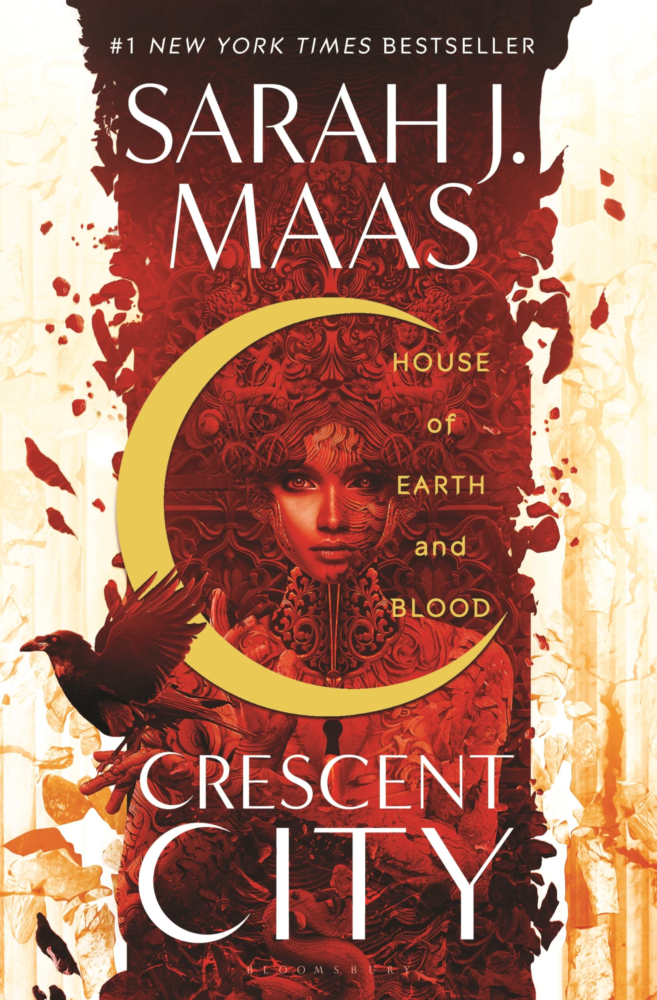 HOUSE OF EARTH AND BLOOD |

HOUSE OF SKY AND BREATH |
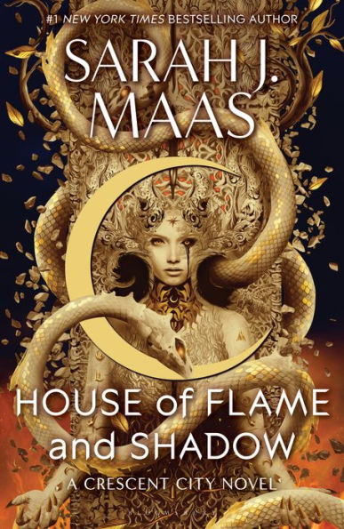 HOUSE OF FLAME AND SHADOWS |
In the vibrant city of Crescent City, where magic and technology coexist, Bryce Quinlan, a half-Fae, half-human party girl, lives a carefree life working at an art gallery. Her life takes a tragic turn when a massacre occurs, and her closest friends—Danika Fendyr, a werewolf, and her pack—are brutally killed. In the aftermath, Bryce is left devastated and haunted by the massacre.
Two years later, Bryce is still struggling with the grief of losing her friends, especially Danika. She is unexpectedly thrust into an investigation when the Angel of Death, Hunt Athalar, a fallen angel enslaved to a powerful archangel, is forced to work with her on solving the case. The murder of a high-profile individual sets off a chain of events, and Bryce and Hunt are forced to work together to uncover the dark secrets of the city’s ruling factions, uncovering an even darker conspiracy involving Fae, Angels, Shifters, and other supernatural creatures.
As the investigation intensifies, Bryce and Hunt are drawn into a complex relationship, torn between their loyalties and the secrets they uncover. The series delves into themes of love, loss, power, and the hidden darkness of the city. Along the way, Bryce discovers her own latent powers, learning that her heritage is far more significant than she could have ever imagined. By the end of the book, Bryce’s life is completely changed, and the stage is set for further revelations and battles ahead.
|
After the events of the first book, Bryce Quinlan and Hunt Athalar continue to navigate the increasingly dangerous world of Crescent City. They’ve formed an uneasy alliance, and their relationship deepens as they grow closer, but both still carry their personal baggage and burdens. Hunt, still shackled to the will of his brutal master, the Archangel Micah, struggles with the power dynamics and what it means to be enslaved. Bryce, on the other hand, begins to understand the magnitude of her own power and the responsibilities it entails.
Bryce and Hunt are drawn into another deadly conspiracy involving the Asteri, the ruling powers of Crescent City, who are involved in sinister schemes. This time, the focus shifts to the ancient powers that lurk behind the throne, with Bryce discovering new truths about her Fae heritage and the connection she shares with the old gods. The stakes are raised when they realize that not only is their world at risk but the balance of power between all the supernatural factions is on the brink of collapse.
The story also deepens the emotional journey of Bryce, who grapples with her trauma and her increasing role in the ongoing battle for freedom and justice in Crescent City. She and Hunt must come together with allies from across the city’s many factions, including the Valkyries, shifters, and even other fallen angels. But they face overwhelming odds and betrayals from within their own ranks.
Throughout the book, Bryce begins to realize the true extent of the forces she is up against and must come to terms with her identity, her powers, and the future she wants to shape.
|
|
As Bryce navigates a new world, she discovers that her ancestors, including Silene and Theia, once fought the Asteri. With this newfound knowledge and power, she becomes a key figure in the rebellion. The plot intertwines with several other character arcs, including Lidia, a double agent torn between loyalties, and Tharion, who switches allegiances to aid the resistance.
The story builds to a climactic confrontation where Bryce, using ancient powers, strikes a fatal blow to the Asteri. She sacrifices herself in the process, but is later revived through the intervention of Jesiba. The book ends with Bryce dismantling the monarchy of the Fae, promising a new future built on equality and justice.
In essence, "House of Flame and Shadow" is an action-packed tale of rebellion, sacrifice, and the fight for a better world. Through Bryce’s journey, the novel explores themes of power, loyalty, and the importance of unity in the face of oppressive forces.
|